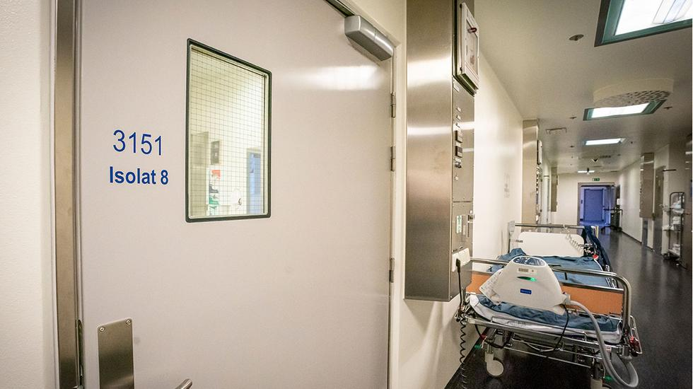

-
26. februar 2020
Første smittede
Koronaviruset blir påvist i Norge for første gang hos en kvinne bosatt i Tromsø-området som hadde oppholdt seg i Wuhan-regionen i Kina.
-
4. mars 2020
Permitteringer
Norske arbeidsgivere får anledning til å permittere ansatte på to dagers varsel
-
6. mars 2020
Fullmakt til helsedirektoratet
Helsedirektoratet får fullmakt til å iverksette tiltak for å hindre smittespredning og sikre helsehjelp.
-
8. mars 2020
Smittet på skiferie
De fleste smittetilfeller i Norge kommer fra nordmenn som har vært på skiferie i Østerrike og ferie i Nord-Italia. Av 169 registrert med koronasmitte, er minst 109 smittet i disse landene.
-
9. mars 2020
FHI legger fram scenario
Folkehelseinstituttet (FHI) legger fram et nytt scenario og anslår at 22.000 koronapasienter vil trenge sykehusbehandling i løpet av året.
-
10. mars 2020
Smittespredning i Norge
Første tilfeller av koronasmitte i Norge som ikke kan spores til utlandet
-
11. mars 2020
Nasjonale forbud
Nasjonalt forbud mot innendørs arrangementer med over 500 deltakere.
-
12. mars 2020
Norge stenger ned

- Regjeringen varsler de mest inngripende tiltakene i fredstid: Alle skoler, barnehager, universiteter og høyskoler blir stengt. Frisører, hudpleiere, treningssentre, svømmehaller o.l. må lukke dørene. Alle fritidsreiser frarådes.
- Det første covid-19-dødsfallet i Norge.
- Børsfall på 8,8 prosent på Oslo Børs. Krakk på over 10 prosent på en rekke børser i Europa, USA og Asia.
- Arrangementer med mer enn 50 deltakere blir forbudt i Oslo.
- FHI anslår at koronaepidemien trolig vil nå en topp i Norge mellom mai og oktober.
-
12.-13. mars 2020
Verden hamstrer

Hamstring tar til i butikkene i Norge. Det samme skjer i en rekke andre land. Særlig hamstres det dopapir.
-
2020
-
2020
-
2020
-
2020
-
2020
-
2020